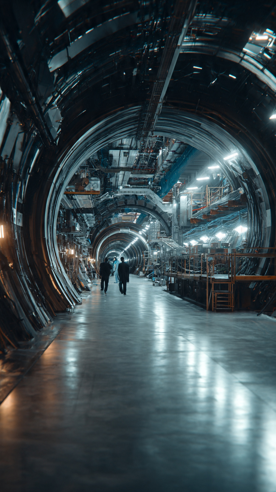
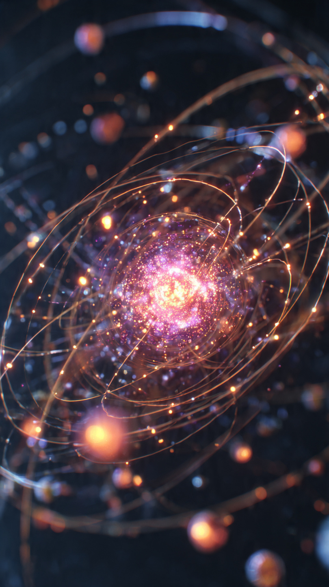

```html
الجسيمات السرية التي تكشف أسرار بناء الكون | اكتشافات وعلوم
```
في أعماق الأرض، وعلى الحدود بين سويسرا وفرنسا، يوجد نفق دائري عملاق يمتد لمسافة تقارب 27 كيلومترًا.
لا تمر بداخله سيارات.
ولا قطارات.
ولا يسكنه أحد.
ومع ذلك...
يُعد واحدًا من أهم الأماكن العلمية على كوكب الأرض.
في هذا النفق، بنى العلماء أكبر آلة عرفتها البشرية لدراسة أصغر الأشياء في الكون.
آلة ضخمة كل ما تفعله هو جعل جسيمات صغيرة جدًا تصطدم ببعضها بسرعة تقترب من سرعة الضوء.
لكن لماذا ينفق العلماء مليارات الدولارات على تصادم جسيمات لا يمكن رؤيتها بالعين؟
كان وراء هذا المشروع سؤال حيّر العلماء لعقود طويلة.
من أين جاءت كتلة المادة؟
ولماذا تمتلك بعض الجسيمات كتلة، بينما لا تمتلكها جسيمات أخرى؟
كان هذا السؤال يبدو بسيطًا.
لكنه كان واحدًا من أعقد ألغاز الفيزياء.
ولو لم يجد العلماء إجابته، لبقي جزء كبير من فهمنا للكون ناقصًا.
قبل سنوات طويلة، اقترح عدد من الفيزيائيين وجود مجال غير مرئي يملأ الكون كله.
وقالوا إن الجسيمات عندما تتحرك خلال هذا المجال، تكتسب كتلتها.
لكن المشكلة كانت أن هذا المجال لم يره أحد.
ولم يكتشف أحد الجسيم المرتبط به.
كان مجرد فكرة رياضية.
وشكك كثير من العلماء في وجوده.
لإثبات هذه الفكرة، كان لا بد من بناء آلة لم يسبق للبشر أن صنعوا مثلها.
آلة تستطيع إنتاج طاقات هائلة جدًا، تعيد خلق ظروف شبيهة بما حدث بعد أجزاء صغيرة من الثانية من الانفجار العظيم.
ولهذا بدأ مشروع استغرق سنوات طويلة، وشارك فيه آلاف العلماء والمهندسين من عشرات الدول.
وكان الهدف واضحًا...
العثور على جسيم واحد فقط.
لكن هذا الجسيم الصغير كان قادرًا على تغيير فهمنا للكون كله.
📷 الصورة رقم 1

بعد سنوات طويلة من البناء والاختبارات، أصبح مصادم الهادرونات الكبير (LHC) جاهزًا للعمل.
بدأ العلماء بتسريع حزم من البروتونات داخل النفق العملاق باستخدام مغناطيسات فائقة القوة، ثم جعلوها تدور في اتجاهين متعاكسين بسرعة تقترب من سرعة الضوء.
وعندما يحين الوقت...
تصطدم الحزمتان وجهاً لوجه.
كانت كل عملية تصادم تُنتج انفجارًا صغيرًا من الطاقة.
وفي جزء ضئيل جدًا من الثانية، تظهر جسيمات جديدة لا تعيش إلا لفترات قصيرة للغاية، ثم تختفي بسرعة.
ولهذا السبب، بُنيت حول المصادم أجهزة كشف عملاقة تستطيع تسجيل ملايين البيانات في كل ثانية.
كان العلماء يبحثون عن إشارة واحدة فقط وسط بحرٍ هائل من المعلومات.
مرّت الشهور...
ثم السنوات.
ومع كل تجربة، كان الأمل يزداد، لكن الدليل الحاسم لم يظهر بعد.
بدأ البعض يتساءل:
هل كانت الفكرة خاطئة من البداية؟
وهل الجسيم الذي يبحثون عنه غير موجود أصلًا؟
لكن فرق البحث لم تتوقف.
فقد كانوا يعلمون أن الاكتشافات العظيمة تحتاج إلى صبر.
ثم جاء يوم الرابع من يوليو عام 2012.
اجتمع مئات العلماء داخل مركز الأبحاث، بينما كان آلاف آخرون يتابعون المؤتمر مباشرة من أنحاء العالم.
وقف المتحدث الرئيسي أمام الشاشة، ثم أعلن الخبر الذي انتظره الجميع:
"لقد رصدنا جسيمًا جديدًا، تتطابق خصائصه مع بوزون هيغز."
ساد التصفيق القاعة.
وبعض العلماء لم يتمالكوا دموعهم.
فقد تحقق حلم بدأ قبل عقود طويلة.
كان هذا الجسيم هو القطعة الأخيرة تقريبًا في النموذج القياسي لفيزياء الجسيمات.
واكتشافه لم يكن مجرد نجاح لمختبر واحد.
بل كان إنجازًا شارك فيه آلاف الباحثين من مختلف أنحاء العالم، وأثبت أن التعاون العلمي يمكنه كشف أسرار ظلت مخفية منذ بداية الكون.
لكن رغم هذا الإنجاز الكبير...
اعترف العلماء أن كل إجابة حصلوا عليها ولّدت أسئلة جديدة.
فما اكتشفوه لم يكن نهاية الرحلة...
بل بداية مرحلة أكثر غموضًا.
📷 الصورة رقم 2

بعد إعلان الاكتشاف، امتلأت عناوين الأخبار في أنحاء العالم باسم بوزون هيغز.
لكن كثيرًا من الناس عرفوه باسم آخر...
"جسيم الإله".
والحقيقة أن معظم العلماء لا يفضلون هذا الاسم، لأنه قد يوحي بأفكار لا علاقة لها بالعلم.
الاسم جاء من عنوان كتاب شهير، ثم انتشر في وسائل الإعلام، بينما ظل الاسم العلمي الصحيح هو "بوزون هيغز".
ورغم أن العثور على هذا الجسيم كان إنجازًا تاريخيًا، فإنه لم يُجب عن كل الأسئلة.
فالكون لا يزال يخفي أسرارًا أكبر بكثير.
فالعلماء يعرفون اليوم أن المادة العادية، التي تتكوّن منها النجوم والكواكب والإنسان، لا تمثل سوى نحو 5٪ من محتوى الكون.
أما البقية، فما زالت غامضة.
هناك مادة مظلمة لا نعرف طبيعتها.
وهناك طاقة مظلمة تدفع الكون إلى التوسع بسرعة متزايدة.
ولا يزال العلماء يحاولون فهمهما.
ولهذا السبب، يواصل مصادم الهادرونات الكبير عمله حتى اليوم.
ففي كل عملية تصادم، تُجمع كميات هائلة من البيانات.
وقد يقود تحليلها إلى اكتشاف جسيمات جديدة، أو قوى طبيعية لم نعرفها من قبل.
وربما تكشف يومًا ما سبب اختفاء المادة المضادة، أو تفتح الباب أمام فيزياء جديدة تتجاوز كل ما نعرفه الآن.
المثير للدهشة أن الإنسان بنى أكبر آلة في العالم...
ليس ليحطم جبلًا.
ولا ليحفر نفقًا جديدًا.
بل ليراقب جسيمات أصغر من الذرة بمليارات المرات.
وهذا يوضح إلى أي مدى يمكن أن يصل الفضول العلمي عندما يحاول فهم أصل الكون.
وهكذا...
بدأت القصة بسؤال بسيط:
من أين جاءت كتلة المادة؟
وللإجابة عنه، تعاون آلاف العلماء من عشرات الدول، وبنوا آلة عملاقة تحت الأرض، وانتظروا سنوات طويلة حتى يظهر جسيم عاش لأجزاءٍ متناهية الصغر من الثانية.
ورغم أن هذا الجسيم اختفى فور ظهوره...
فإن أثره بقي إلى الأبد، لأنه ساعد البشرية على فهم جزء جديد من القوانين التي بُني عليها الكون.
لكن العلماء يؤكدون أن هذه ليست النهاية.
فكل اكتشاف جديد يكشف أن أمامنا أسرارًا أكثر مما اكتشفناه، وأن رحلة فهم الكون ما زالت في بدايتها.